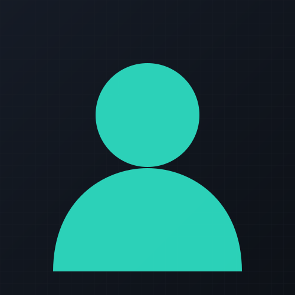

Hai, saya Radhitya
Web Developer & Designer
Saya membangun website dan sistem informasi yang rapi secara visual dan solid dari sisi kode — mulai dari sekolah, dashboard akademik, sampai portofolio pribadi.

Tentang Saya
Saya mulai belajar web development secara otodidak dan lewat bangku kuliah, lalu jatuh cinta pada proses mengubah kebutuhan yang berantakan menjadi antarmuka yang jelas dan sistem yang jalan dengan benar.
Fokus saya ada di pengembangan web full-stack dengan PHP dan Laravel, ditambah kepekaan desain UI/UX supaya hasil akhirnya nggak cuma berfungsi, tapi juga enak dipakai. Saat ini banyak mengerjakan sistem informasi untuk sekolah dan instansi pendidikan.
12+
Project Selesai
10
Skill Utama
3
Tahun Belajar
Peralatan
Visual Studio Code
Code editor utama untuk semua project harian.
Figma
Merancang wireframe dan tampilan UI sebelum coding.
GitHub
Menyimpan repository dan mengelola kolaborasi kode.
Laravel
Framework PHP andalan untuk membangun sistem backend.
Google Chrome
DevTools untuk debugging tampilan dan performa.
MySQL
Mengelola basis data untuk aplikasi yang dibangun.
Git
Version control untuk menjaga riwayat perubahan kode.
Adobe Photoshop
Menyunting aset visual dan gambar untuk website.
Canva
Membuat materi visual pendukung dengan cepat.
Karya
Kumpulan desain tampilan dan struktur halaman website yang pernah saya rancang.
Tampilan UI aplikasi mobile yang pernah saya rancang untuk beberapa sistem.
Poster, konten media sosial, dan desain grafis lain di luar pengembangan website.